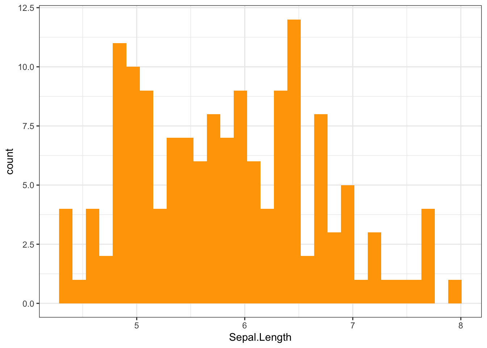
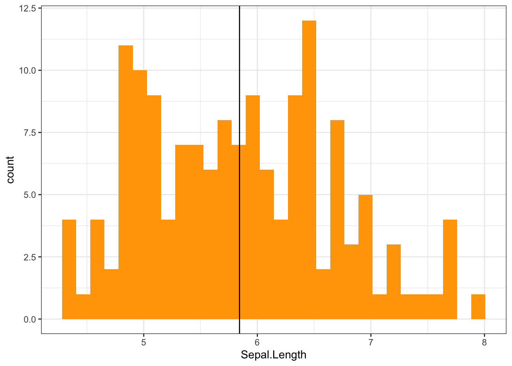
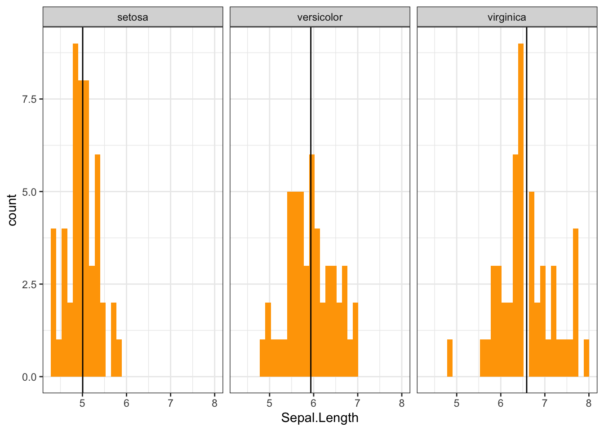

ggplot2: geom_histogram & facet_wrap with different vertical lines on each facet
2022-04-03The geom_histogram() function from
ggplot2 package is used to create a histogram
plot. For example, let’s plot the distribution of
Sepal.Length from iris data.
library(ggplot2)
theme_set(theme_bw())
ggplot(iris, aes(Sepal.Length)) + geom_histogram(fill = "orange")
To add a vertical line to show the mean value of
Sepal.Length, we can use
geom_vline().
library(ggplot2)
ggplot(iris, aes(Sepal.Length)) + geom_histogram(fill = "orange") +
geom_vline(data = iris, aes(xintercept = mean(Sepal.Length)))
One of the most powerful aspects of ggplot2
is the ease with which you can create multiple sub-plots using
facet_wrap(). For example, let’s plot the
distribution of Sepal.Length by each group of
Species from iris data.
ggplot(iris, aes(Sepal.Length)) + geom_histogram(fill = "orange") +
facet_wrap(~Species) +
geom_vline(data = iris, aes(xintercept = mean(Sepal.Length)))
While using facet_wrap() each plot shows a
different subset of the data, however, the
geom_vline() adds the vertical line on the same
x-intercept in all plots. For instance, in the above histograms
the vertical line shows the overall mean of
Sepal.Length column instead of mean of each
group.
It’s more practical to add a vertical line on each facet
showing the mean for each group of data. To do so, a separate
data frame containing the mean of each group should be created
to use with geom_vline().
## # A tibble: 3 × 2
## Species mean
## <fct> <dbl>
## 1 setosa 5.01
## 2 versicolor 5.94
## 3 virginica 6.59ggplot(iris, aes(Sepal.Length)) + geom_histogram(fill = "orange") +
facet_wrap(~Species) +
geom_vline(data = vline, aes(xintercept = mean))